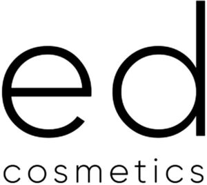

Trade Mark Journal No.2025/044 31 October 2025
WO0000001880651 (3)
Office of origin: Ukraine
Date of International Registration:2 September 2025
Date of designation in the UK:
2 September 2025

- Class 3
- Antiperspirants [toiletries]; aromatics [essential oils]; balms, other than for medical purposes; bergamot oil; whiting; lip glosses; cotton wool impregnated with make-up removing preparations; bleaching preparations [decolorants] for cosmetic purposes; moustache wax; depilatory wax; astringents for cosmetic purposes; gaultheria oil; lipsticks; deodorants for human beings or for animals; scented water; extracts of flowers [perfumes]; herbal extracts for cosmetic purposes; ethereal essences; essential oils; essential oils of cedarwood; essential oils of lemon; essential oils of citron; Javelle water; jasmine oil; greases for cosmetic purposes; hair dyes; leather preservatives [polishes]; colour-removing preparations; collagen preparations for cosmetic purposes; hair conditioners; cosmetics; eyebrow cosmetics; cosmetics for children; beauty masks; cosmetic preparations for baths; cosmetic preparations for eyelashes; cosmetic products for skin care; skin whitening creams; creams for leather; polishing creams; cosmetic creams; lavender water; lavender oil; hair spray; hair lotions*; lotions for cosmetic purposes; after-shave lotions; massage gels, other than for medical purposes; massage candles for cosmetic purposes; almond oil; almond milk for cosmetic purposes; deodorant soap; shaving soap; cakes of toilet soap; cakes of toilet soap; almond soap; antiperspirant soap; soap for foot perspiration; soap*; micellar water; musk [perfumery]; mint for perfumery; mint essence [essential oil]; cosmetics sets; eau de Cologne; oils for toilet purposes; oils for perfumes and scents; oils for cosmetic purposes; oils for cleaning purposes; oil of turpentine for degreasing; cleansing milk for toilet purposes; cleansers for intimate personal hygiene purposes, non-medicated; scouring solutions; perfumery; perfumes; gel eye patches for cosmetic purposes; pomades for cosmetic purposes; air fragrancing preparations; bath preparations, not for medical purposes; leather bleaching preparations; hair straightening preparations; shaving preparations; depilatory preparations; nail care preparations; hair waving preparations; sun-tanning preparations [cosmetics]; make-up removing preparations; make-up preparations; shining preparations [polish]; aloe vera preparations for cosmetic purposes; toiletry preparations*; air fragrance reed diffusers; baby wipes impregnated with cleaning preparations; antistatic dryer sheets; tissues impregnated with cosmetic lotions; tissues impregnated with make-up removing preparations; bath salts, not for medical purposes; sunscreen preparations; douching preparations for personal sanitary or deodorant purposes [toiletries]; talcum powder, for toilet use; terpenes [essential oils]; rose oil; toilet water; beard dyes; phytocosmetic preparations; dry shampoos*; shampoos*.
LLC "E.D.COSMETICS"